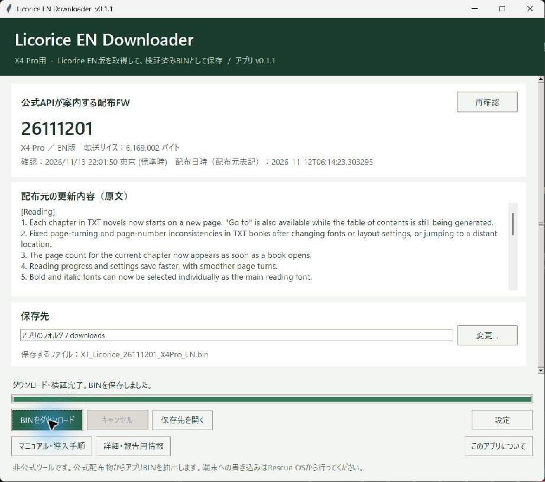

小さい画面では、配布情報・更新内容・保存先のエリアを上下にスクロールできます。ダウンロード・キャンセル・設定・マニュアルの操作は下部に表示します。
公式Global更新APIが現在案内する、X4 Pro用Licorice EN版を取得して、Rescue OSで使用するアプリ本体のBINをPCに保存します。端末の接続、アカウント、実端末IDの入力は不要です。
LicoriceENDownloader.exeを起動します。初版の対応機種はX4 Proのみです。X4、X4 Classic、X3などのFW取得には使用できません。
画面はWindowsの表示言語に合わせて日本語または英語で表示します。「設定」の「表示言語 / Language」で変更でき、アプリの再起動後に反映されます。
開発確認用ZIPは、書き込み可能な場所へフォルダごと展開してください。ZIPの中から直接EXEを起動しないでください。Pythonの追加インストールは不要です。
Windows版の対応範囲は確認中です。開発環境はWindows x64・Python 3.10.11・Tcl/Tk 8.6.12です。配布EXEにはコード署名を付けていません。
起動時にWindowsの警告が表示された場合は、入手元と配布ZIPのSHA-256が案内と一致するか確認してください。判断できない場合は起動を中止し、配布者へ確認してください。保護機能を無効にする必要はありません。
配布元：GitHub Releases。通常はWindowsポータブルZIPを取得してください。「Code → Download ZIP」はソースコードです。
起動時に公式APIへ照会します。「再確認」で取り直せます。「公式APIが案内する配布FW」は、その照会で案内された版です。すべての配布経路の最新版を保証する表示ではありません。
「アプリ v0.2.1」と「配布FW 26111201」のように、アプリ版とFW版は別です。更新内容は配布元の原文を表示します。配布日時のタイムゾーンはAPI側で不明なため、元の表記をそのまま表示します。
downloadsです。「変更…」で別の場所を選べます。名前の例：XT_Licorice_26111201_X4Pro_EN.bin。独自パッチやパディングを加えないアプリ本体です。フルフラッシュイメージ、ブートローダー、端末のバックアップではありません。
「キャンセル」で中止を要求できます。通信の終了まで最大15秒程度待つ場合があります。保存の確定後に中止要求が届いた場合は、保存結果を完了として表示します。
この章は、対象のX4 ProでRescue OSを導入済みの方向けです。準備が必要な場合は第5章へ進んでください。
現在のスロット構成によっては、別のスロットにあるFWが置き換わります。本アプリはスロット構成を確認・変更しません。
Rescue OS for X4 Pro — 作者Eさんの配布記事（note）
記事内のダウンロード欄から入手できます。2026年11月13日の確認時点では、rescue-os-x4pro-v1.1.zip（2026年11月12日更新）が掲載されています。更新や導入方法については、配布元の記事を確認してください。
Rescue OSの準備は、FW取得の操作とは独立して扱います。新規導入の具体的な方法は、対象版・端末状態・導入方式の確認後に掲載します。
対応する版と端末、バックアップ方法、起動方法、書き込み先と復元方法の実機確認は今後の作業です。既存の端末を変更する操作を、本アプリが自動で実行することはありません。
現段階では、未検証のブートローダー変更や個体設定の書き換え手順を案内していません。
| 項目 | 意味 |
|---|---|
| EN版 | 公式Global側で配布するFWの区分。CN版とは同じ版番号でも内容が異なる場合があります。 |
| 表示言語 | 端末の言語設定と、FWに含まれる翻訳データの両方に依存します。 |
| リージョン | 端末側の地域設定です。FWをPCに保存しても変更されません。 |
EN版を取得することだけで、すべての端末で日本語表示が保証されるわけではありません。言語の選択肢が想定と異なる場合は、実際に導入した配布物・端末設定・FW版を確認してください。
「設定」で、元のXOTAと取得情報JSONの追加保存（通常のBIN取得には不要）と、表示言語（自動・日本語・English）を選べます。
| ファイル・フォルダ | 内容 |
|---|---|
settings.json | 保存先、追加保存の選択、表示言語、ウィンドウ位置。EXEと同じフォルダに作成します。 |
downloads/ | 初期のFW保存先です。 |
logs/ | ローカルログ。1ファイル256 KiB、過去2世代を保持します。自動送信しません。 |
*.xota | 任意で保存する配布元の暗号化ファイル。 |
*.json | 任意で保存する配布情報・検証結果。個体情報は記録しません。 |
アプリフォルダ内の保存先は相対指定で保持するため、フォルダごと移動できます。外部の保存先を指定した場合、その場所は移動しません。
アプリ更新時は終了してから新版を展開し、settings.jsonと取得済みFWを保持してください。公開ZIPには設定・ログ・FWを含めません。
インターネット接続を確認し、「再確認」を押してください。APIの仕様変更、配布の取り下げ、URL失効等でも失敗します。通信は最大2回試行し、無限には繰り返しません。
完成済みBINは保存しません。配布情報を再確認して取り直してください。繰り返す場合は「詳細・報告用情報」を確認してください。検証を無効にして保存する機能はありません。
空き容量、書き込み権限、ファイルが使用中でないか確認してください。別の保存先を選ぶか、アプリをフォルダごと書き込み可能な場所へ移してください。設定保存とBIN保存の成功・失敗は別々に扱います。
壊れた設定は可能な場合にsettings.broken-日時.jsonへ保管します。未対応の設定形式や、保管できない状態では元ファイルの自動上書きを停止します。
BINは保存済みです。XOTAやJSONの失敗だけを理由にBINを削除しません。詳細表示を確認し、必要なら保存先を変更して取り直してください。
「詳細・報告用情報」→「報告用情報をコピー」を使い、内容を確認してから報告してください。アプリ版・OS・対象FW・エラー分類を含みます。ログ全体や端末バックアップを公開する必要はありません。
v0.2.1（2026年11月21日）：不具合修正。更新内容・配布日時・チェックサムが空（null）の配布情報でも取得できるようにしました。タッチパッドでスクロールできるようにしました。BOM付きで保存されたsettings.jsonが初期化されないようにしました。
v0.2.0（2026年11月20日）：英語表示に対応。Windowsの表示言語に合わせて自動で切り替え、「設定」から変更できます。英語版マニュアル・READMEを追加。
v0.1.1（2026年11月13日）：保存確定前の中止、確認対象だけの上書き、低速通信、設定・APIの異常応答、終了処理、報告内容のコピーを修正。主要操作を固定し、小さい画面では内容をスクロールできるようにしました。
v0.1.0（2026年11月13日）：日本語GUI、公式API照会、XOTA抽出、検証、ポータブル設定、開発版EXEの初期実装。
GitHubリポジトリ・ソースコード ／ 配布・更新情報 ／ 不具合・要望。アプリ本体はMITライセンスです。
本アプリはXTEINK非公式です。第三者ライセンスは同梱のTHIRD_PARTY_NOTICES.mdとlicensesフォルダを確認してください。